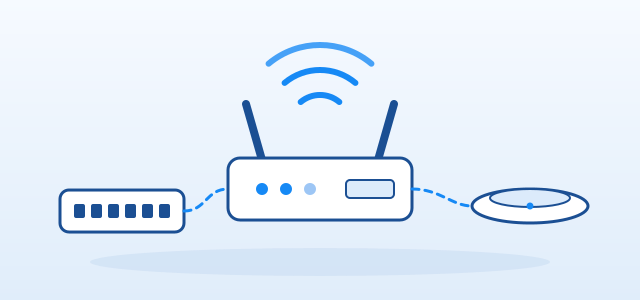

ÜRÜN GRUPLARI
Telefon ve Santral Ürünleri
Ofisinizin dahili ve harici görüşme ihtiyaçlarına uygun telefon ve santral ürünlerini birlikte planlayın.
TELEFON VE SANTRAL ÜRÜNLERİ
İş yerleri için IP telefon ve santral ürünleri
Telefon sistemi seçiminde dahili sayısı, hat tipi (analog, dijital veya internet üzerinden) ve mevcut altyapı belirleyicidir. Telefon sayısını ve hangi özelliklerin gerektiğini (kayıt, çağrı yönlendirme, toplantı vb.) belirtmeniz seçenekleri netleştirir.
Yeni bir ofis kuruyorsanız yaklaşık çalışan sayısını, mevcut sistemi genişletiyorsanız santralin marka ve modelini paylaşmanız yeterlidir.
Telefon ve Santral grubunda iletebileceğiniz talepler
- IP telefonlar ve masaüstü telefonlar
- Telefon santralleri
- Kablosuz (DECT) telefonlar
- Konferans telefonları ve kulaklıklar
- Toplu telefon ve santral talepleri
Telefon ve Santral talebinde paylaşmanız gereken bilgiler
- Dahili (telefon) sayısı
- Hat tipi (analog, dijital, internet üzerinden)
- İstenen özellikler (kayıt, yönlendirme vb.)
- Mevcut santral marka ve modeli
- İstenen adet
Hat ve altyapı bilgisi netleştikten sonra uyumlu seçenekler değerlendirilir.
İLGİLİ ÜRÜN GRUPLARI
Birlikte talep edilen ürünler
YARDIMCI BİLGİLER
Sık sorulan sorular
IP telefon ile analog telefon arasındaki fark nedir?
IP telefonlar ağ üzerinden çalışır ve ek özellikler sunabilir; analog telefonlar ise klasik hat bağlantısı kullanır. Mevcut altyapınızı paylaşırsanız hangisinin uygun olduğu değerlendirilebilir.
Santral seçerken hangi bilgiler gereklidir?
Dahili sayısı, gelen hat tipi ve ihtiyaç duyduğunuz özellikler (sesli yanıt, çağrı kaydı vb.) temel bilgilerdir.
Mevcut santralime telefon ekleyebilir miyim?
Santralin marka ve modelini, mevcut dahili sayısını ve eklemek istediğiniz telefon adedini iletin; uyumlu seçenekler değerlendirilir.